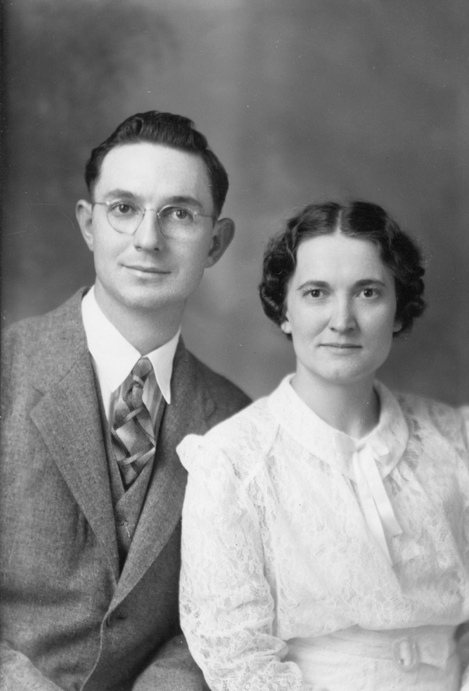
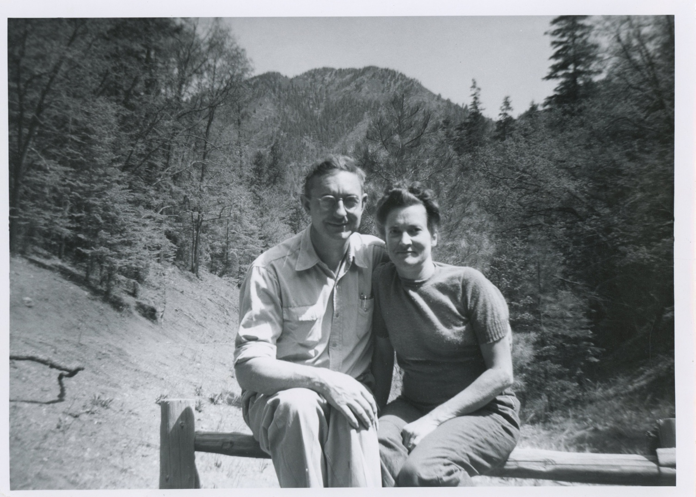

Will T. (Bill) Cooley was born 19 March 1910 in rural Ellis co., Oklahoma, on a farm his father, W. T. Cooley, had purchased before leaving his post as territorial sheriff of Woodward County, OK. He was the youngest child in his family. Bill attended grade school in rural Ellis County, riding his pony to school. As the closest high school was Shattuck, beyond the distance of a daily horseback commute, he concluded schooling with successful completion of the 8th grade exam required in Oklahoma and joined the family in their farming operation. His older sister, Almeida, had lasted only a few days in high school, reporting in the 1950’s that she had a bad experience in being exposed to Latin. This resistance to further schooling of his nine years older sister may have furthered the disinclination to continue his education. In 1926 the family returned to Kansas after an absence of some 35 years, settling in Elk County where he farmed in partnership with his father WT and older brother John.
Mary Ellen Osborne Cooley was born 19 December 1908 fin rural Bates County, Missouri. She was the oldest child in her family. In 1919 she contracted the Spanish Flu, weakening her system such that later she later contracted TB of the bone. From her weakened bone structure from the flu she was hospitalized in the Long Memorial Children’s Hospital (A Christian Church mission at that time) in Kansas City, Missouri, for several years. In the summer of 1923, her parents and siblings moved to rural Elk County, Kansas. However, Mary Ellen did not join her family until later as she was recovering from back surgery that she had had in the Spring. She joined her family later that year via a train trip from Kansas City. In the following years she continued her education, living at times with her great uncle John Osborne in Elk Falls as well as commuting by horse drawn wagon driven by her younger brother Lloyd to the high school in Elk Falls. She finally completed high school in 1929, graduating using crutches as the TB, though cured, left her permanently crippled. The time living with her great uncle, a heavy cigar smoker, with her weakened condition, may have contributed to later allergies, asthma, and bronchitis which were also items present throughout her adult life. Her determination to live her own life, in strong opposition to her parents’ paternalism, was reinforced by a number of the local preachers using her as a sermon example of “the little crippled girl down on the farm”. By correspondence with girlfriends, some of which had both additional education and much more liberal social views than her own family, she intellectually moved beyond her own background, though she never had the chance for college, despite her desire.
The Cooley and Osborne farms were rather close by foot, both homes being on the West side of the Elk River with the Cooley place being less than a mile North of the Osborne property. Mary Ellen’s younger siblings Billy and Betty attended school at the rural Stony Point school, North of the Cooley farm and on the East side of the river. Stony Point was also the social gathering place for the community, and, as Bill had nieces and nephews in the neighborhood also attending Stony Point, it was natural that the two families became acquainted.
There was further acquaintance by way of common attendance in worship at the little Christian Church in Elk Falls. Bill was quite active in this congregation, even to the point of receiving ordination as an Elder from Rev. John Zimmerman, the state secretary of the Christian Churches at that time. (Within the next 20 years the custom of formal ordination of lay Elders ceases to be practiced.). He at one time even considered attending Bible College, resulting in possession of college catalogues, though this never materialized. In the 20’s the Osborne’s, as a good Baptist family, would attend the church on Sunday. As they were unaware of the open table and eucharistic centered practices of the Christian Church, they would walk out of the service before the communion was served, which, would, from the attitude of the Christian Church members, almost be seen as an insult. Such missed communication was resolved in future years, but it was certainly painful to those involved at the time.
During the depression this congregation was served by the Tom Hill family, missionaries to India who were called home because the Christian Church could not afford to keep them in the field. Mary Ellen remained in correspondence with the daughters of this family throughout the rest of her life, having acquired a very open attitude to the needs and desires of the rest of the world as a result of this influence. Late in life, having rejoined the Baptist church in Hatch, she refused to have anything to do with their “Missionary Circle” as she said she had studied this information “40 years ago”.
This church and school acquaintance eventually developed into a courtship, though not without complications of both the economic depression, making funds for setting up housekeeping hard to acquire, and Mary Ellen’s physical condition which had resulted in the physicians advising her parents that she should never marry. Love, or Mary Ellen’s stubborn determination to live her own life, or a combination of the two, eventually won out. Her requirements for marriage in light of her physical condition included 1) an electric cook stove, 2) indoor plumbing, and 3) a refrigerator instead of ice box as she believed she needed these items in order to be able to physically keep house.
These requirements clearly indicated a life in town instead of on the farm. Thus, Bill was tested and accepted for training through General Motors in (variously reported) Rock Island, Illinois, or Waterloo, Iowa. His lack of algebra resulted in this course not being completed, though the training obtained, and his natural aptitude resulted in a position as mechanic with the Ames Chevrolet agency in Moline, Kansas, some 20 miles from the respective farms. The Ames Chevrolet dealership had then, and for many years to follow, the distinction of the oldest Chevrolet agency in Kansas.
Bill and Mary Ellen were married in 1938, setting up housekeeping in a small rental in Moline. Mary Ellen requested that neither Bill’s nor her parents be present at the wedding, though in gatherings later that day the whole family are present in photo’s. The next year the young couple farm-set for the Cooley parents while they made a trip to visit children, siblings, and other relatives in Oklahoma, Texas, and Arizona.
By 1940 Bill acquired the Highway 99 Repair shop on the East edge of Howard, the county seat of Elk County. The small rental in Howard was followed in early 1941 by the purchase of an out of repair home next to the Santa Fe railroad tracks in NW Howard. Before the end of that year a coat of paint and other repairs resulted in a small, but attractive, home with significant garden acreage to the west of the house. A very large iris bed was planted to the northeast, so large that it was finally controlled by mowing with the lawn mower after the flowering season. The front was dominated by a very large American Elm on the SE corner, with other, additional trees being added to the west in the following years.
The family first attended the Baptist Church, where Mary Ellen taught Sunday School. Mary Ellen was very progressive in her scholarship, using the Goodspeed New Testament as her choice instead of the King James. As Edgar Goodspeed was the professor of New Testament at the University of Chicago and he was a significant contributor to the Revised Standard, this would have been, in itself, a very liberal position taken in the late 1930’s. Ted started Sunday School there. As Bill was clearly uncomfortable with the closed and almost anti-communion attitude of the Baptist tradition, the family, during the war, became active in the Christian church (Disciples) in Howard, continuing with this relationship as long as they lived there.
Again in contradiction to orders of the physicians, Mary Ellen had a first child, Theodore (Ted) on 15 September 1941. There being no hospital facilities in Elk County, the birth was in Eureka, the next county seat North. Until starting first grade, Ted was known to Mary Ellen and the rest of the family as “Buddy,” being a constant companion to her. Much to Mary Ellen’s disappointment, she was unsuccessful in nursing for any length of time. However she endeavored, within her handicaps, to mother to the best of her abilities
With the outbreak of WWII, Bill, as a mechanic with abilities to keep the farm equipment working, even making parts when none were available, received more gasoline and tire allocation than the general public. Thus a 1937 Willis sedan, which has been purchases by Mary Ellen’s father and used for a family trip to the west coast to visit relatives in California, was loaned to her to drive the eight miles from Howard to the Osborne farm. This continued for most of the war as the Osborne’s did not retire to town for another four years. She drove so slowly that Bill had the generator adjusted for the maximum charge to keep the battery up and even then had to place the charger on the car on almost a weekly basis to keep it running. Mary Ellen did finally learn to get up enough speed to climb one rather steep hill coming back for the farm without killing the engine and having to start over. Needless to say, when the war and rationing ended, she gave up driving and the car was sold.
During the war materials of all kinds were simple not available -- Bill needed a tow truck, but such was totally unobtainable. Thus he took an early 30’s solid steel wheel trunkless Studebaker sedan (they made some mid to large auto’s in those years), removed the body with a cutting torch from behind the driver’s seat, welded the very back of the body back on to turn it into a cab, and mounted an windlass and tow material on a homemade bed on the back. This vehicle was used until after the war had ended for commercial needs for the garage.
Late in the war naturally gas came to Howard. Thus, the previous coal heat was changed out to gas. Scorch marks remained on the living room floor from coal embers which spilled while the stove was being stoked, even though a steel floor protection had been placed under the stove. The crank phone was placed in a window box area with storage under new benches before the window. Mary Ellen made a great deal of use of the phone as she was limited in mobility and often on crutches even before expecting the birth of a second child in 1946. Toys were no longer on the market. Mary Ellen made dolls from wooden clothespins for Ted to play with. She made picture books from old cloth pattern books from the dry goods stores in Howard with photographs from Life, Colliers, and such, pasted in with flour and water past so even if chewed on by a small child, no significant health risks were present. Mary Ellen read to Ted from her old High School books as even normal printing and binding processes were limited.
During the war retired teachers were pressed. Into service, with a neighbor in the duplex to the South teaching in the Howard High School. His son was already established as a geographer of note, having pioneered the idea of viewing the globe of the earth from the position of the pole instead of the equator. Ted visited enough with this neighbor (Ted would have about age 4) to start his interest in geography. Mary Ellen’s youngest brother Billy was in the Navy, though in a school program for potential officers. He would be the one playing Santa for the family as well as other close relatives when he was home on leave over Christmas. One Christmas Ted received a bicycle which was a re-welded fixer-upper from the local trash dump which Bill had found and repaired. What things were available were appreciated, though eggs, milk, home churned butter, and lots of chicken were available to eat as both sets of grandparents were still on the farm, with the Cooley grandparents still having several milk cows and a cream separator still in use. Ted even recalled cranking the cream separator. Needless to say, the milk was not pasteurized. Very large vegetable production from both the Howard property and rural Cooley farm, where Bill’s older sister Almeida did extensive home canning, provided a lot of the food. The Osborne farm had a large fruit orchard which also contributed to the diet. Bill was not called to military duty on the premise that he was needed to keep the local farm equipment in operation, though the complete inability of Mary Ellen to care for the family by herself probably influenced the local draft board. Much of the work Bill performed was on credit, as the farm economy simply did not have a lot of cash, unlike the war production industrial areas which were developing the pent-up demand which appeared in 1946. Thus his business was at a distinct disadvantage following the close of hostilities. This was complicated by his attempt to get into the auto business in 1947 with the Crosley, a very small make of economy auto which did not have the engine reliability needed, nor did it fit the marketing structure of the time, with bigger and better being the goal. Thus, he sold the business in 1948 and became employed as a mechanic for the local Dodge-Plymouth, Allis-Chalmers garage and agency in Howard.
In 1946 Mary Ellen accomplished two goals, the enlargement of the house with a large dining room on the West, and a small washroom-storage room added to the North of it. 1946 also saw the birth of LaRena Mary on 30 July, giving the two children she desired. Most of 1946 Mary Ellen was on crutches, with a lot of bed rest due to the pregnancy and postpartum situation. Ted’s bed was placed in the new living room as the house was otherwise short on space. He spent some time staying on the grandparents Cooley home immediately West of Howard so that Mary Ellen could regain her strength. The Howard residence was lath and paster with wallpaper, so the new addition with painted walls was watched in construction by Ted and gave him some appreciation of how a home was made. The outside window from the kitchen to the West was left in place to the washroom, a window which Ted broke trying to find out how much pressure the glass could stand. The cuts to the hand were not significant, though the lessons learned. About this time, he also got into the ex-lax, thinking it was chocolate candy. That lesson was also learned. In 1948 Stony Point, like most rural schools, was closed, with the building being sold. Bill bought the old coal house next to it, and with the help from Lloyd and friends, moved it to just NW of the house in Howard, planning to convert it into a garage. Ted cleaned it out, getting a full dose of coal dust in the process, as all the level boards were coated in the dust.
Not enough butter was hand churned during the war years to meet all of the family needs, so Ted assisted Mary Ellen in stirring in the yellow dye into the white margarine, as the dairy industry did not allow a non-dairy product to be sold which looked like butter. Other assistance was provided in the kitchen, and, in particular, the washroom where an early spin-dry system was used as Mary Ellen refused to use a wringer washing machine, being very afraid of being caught in the wringer due to her limited mobility. The washing and spin systems were separate, requiring all the wet wash to be lifted out of the wash basket over into the spin system, which had to clamped down with a top containing a match wheel, before the system could safely be engaged to spin. Ted learned to help a lot in this process as Mary Ellen never felt comfortable with mechanical devises. Later in New Mexico the wash was done on a Saturday so Ted could go with Mary Ellen to the laundry mat to be responsible for feeding the wash through the wringer which Mary Ellen was afraid to do.
Travel beyond Howard was limited, though in 1947 the family went to Butler, Missouri, where Mary Ellen visited her only living grandparent, then in declining health. Occasional trips to Enid, Oklahoma, to the home of Bill’s uncle and aunt, were made, providing transportation to the W. T. Cooley family for the visit. In 1948 Ted was taken out of 2nd grade for a long weekend so that the Osborne grandparents could be taken on a trip to Noel, Missouri, to visit relatives. Accommodations for Bill, Mary Ellen and children were in a rustic cabin owned by the relatives along a creek where Ted got to sail a toy boat, though the seal along the keel leaked. The Roaring River was seen, where the river emerges from a cavern, as well as the first trip back into a commercial cave, with the impact of complete darkness when the guide switched off the lights. Another trip was to the Lake of the Cherokees in NE Oklahoma which involved fishing as well as touring, though Mary Ellen did not make this trip. The pre-war vehicles owned by Bill were no really reliable for a long trip, and the Crosley demonstrator was too small for travel.
In 1946 Bill received the Republican nomination for Undersheriff of Elk County, an elected position under the sheriff, separately bonded, such that if the sheriff should be unable to fulfill the duties of the office the already elected and bonded undersheriff could immediately take over the duties. Bill acquired a red tube to go over a flashlight in order to direct traffic, which was carried on the dash of his auto as well as a .38 S&W police special revolver as part of the position. Target practice was done on the Osborne farm where he would shoot from the bank some 50 feet down to the river to kill the turtles in the river which would feed on the fish which he wanted to catch. One of the most amusing results of this term in office was when the Shelly gas station next to the Highway 99 repair shop celebrated 25 years under the same owner. A large collection of company executives came to Howard for the banquet dinner. Bill was invited as the owner of the business next door. At that time Kansa was a dry state with no alcoholic beverages allowed. After the dinner one of the executives began to produce alcoholic beverages to celebrate the occasion only to be cautioned by others present not to do so as the undersheriff sat at the table. Needless to say, no alcohol was consumed. This was a four-year term. In the last six months of the term the elected sheriff had an incapacitating stroke, so Bill served out the rest of term as acting sheriff, which, thankfully, was peaceable. He was offered the Republican nomination for sheriff, but Mary Ellen would have had to cook for the prisoners in the jail, which was at the back of the provided housing for the sheriff. She was physically unable to do this, so the nomination was declined.
Bill liked to hunt squirrels in the woods on the North side of the river behind the Osborne farmhouse. Ted often accompanied him on these trips. Both squirrel and rabbit were considered welcome meat additions to the family menu, with Bill being a good cook of wild game. The long hole (space between rapids on the river) behind the Osborne farm home was also a source of catfish of a significant size, eight to ten pounds being common. These were caught on trotline bated with smaller fish caught on rod and reel. The turtles also would get the bait, so the control of the turtles increased the fishing success. Most of this was done by rowboat, with the boat being chained to one of the trees near the lower ford below the main fishing area. The oars were kept at the house, as the river would flood from time to time, though the chain would keep the boat from being carried downstream, anything left in it would be lost. In about 1949 a second-had outboard boat engine was acquired, making the use of the boat more enjoyable. Mary Ellen’s brother Lloyd, whose farm was East of the river, often also had a boat on the river, with the families sharing in the fun and the cousins enjoying the small falls on the Osborne place which came from a creek entering the river just above the ford. Mary Ellen’s parents moved to Howard in late 1944, but the farmhouse was used for many years as a family gathering place and picnic spot. Some of Bill’s items which were not moved to New Mexico were stored in the wellhouse/cellar to be recovered by the family many years later.
The Cooley grandparents’ property just West of Howard was much smaller, though the very large garden provided produce for the extended family from time to time. The large garden area West of Bill and Mary Ellen’s home in Howard was plowed by a team of horses each Spring, as were many gardens in town. Table vegetables were the chief crop, though one year Ted took first prize in the Elk County fair with his pumpkin. Bill, as youngest child, advised on the maintenance and upkeep of his parent’s place, though his older sister Almeida, never married, lived at home until after her mother’s death in 1955. Also, after the war Bill purchased a rather expensive disability/accidental death policy on himself, to provide support for Mary Ellen in the case of his disability or death. This policy impacted the family’s available cash for the rest of his life, but it gave reassurance to Mary Ellen of support for the future.
In about 1947 financial and medical considerations (Bill had gall bladder conditions from this time for the rest of his life) required the sale of the repair shop with Bill acquiring employment with the Dodge-Plymouth/Allis-Chalmers dealership in Howard as a mechanic. This included driving the new auto’s from their delivery point to Howard, with Ted joining him on one occasion in a new 1950 Dodge. In 1948 Ted broke his left arm. When it was determined that it was healing incorrectly, the dealership, also then handling Kaiser-Fraiser auto’s, loaned the Kaiser demonstrator to Bill to take the family to Topeka where hospitalization and insurance coverage was available for the necessary corrective procedures. Toy vehicles from this dealership, after the model year was through, came as Christmas presents on occasion. The major tools, such as welding equipment were sold with the shop, so Bill had only his hand tools as the sign of his trade.
Mary Ellen’s lung problems had gradually increased over these years, with housekeeping being almost completely done on crutches, with Bill doing all the heavy work on weekends. 1950 was a wet year, with serious complications coming to Mary Ellen. By late December she was so badly congested that the physicians advised immediately moving her to a dry climate, as they were unwilling to be responsible for her life for more than a week or two. As she had had TB of the bone, it was quite possible that the physicians suspected that now she had TB of the lung. If so, this was never formally diagnosed. Thus, Bill acquired a 1946 Chevrolet, at a price he always considered excessive, as a necessary vehicle to make the trip to the Southwest. His toolbox took up much of the trunk, so the space between the seats was filled with clothing and bedding as no one in the family knew what to expect dealing with this emergency. Food was packed as funds were too short to depend on commercial eating establishments. The house in Howard was closed in very early January and the family departed on an emergency mission, though Mary Ellen insisted, in part for the children, on interpreting this as a grand adventure.
The trip West was by stages, as long-distance travel by auto was really a new experience to all the family. The first day only Enid, Oklahoma, was achieved, with a visit with Bill’s aunt Almeida Musser and some of her family. As this distance and destination had been previously done with Bill’s parents, it was somewhat of a shakedown of mode with the two children, age 9 and 4, in the back seat with bedding, etc. piled up to the top of the cushion, and the kids learning how to set and see out while traveling. Ted was so nervous and uncomfortable that he had a round of motion sickness early on this first day. Road maps were acquired, but Bill was uncomfortable with heavy traffic, so the major routes were avoided where possible.
The second day was Shattuck, Oklahoma, where Bill’s older sister Ella Richardson and her two youngest sons lived. This was not totally new, as Bill had lived in the rural area as a boy. By staying with relatives, the expense of the trip was minimized. This also gave Bill the opportunity to see close relatives which had not been seen since the WT Cooley’s 60th wedding anniversary in 1948. West of Shattuck US 54 was finally intersected leading SW into New Mexico. From some 40 miles out, Tucumcari Mountain could be seen from the Northeast, being the first clear example of such ever seen by the family. Mary Ellen was awed, sharing this excitement with all the family, and never ceased to comment on all subsequent trips when again seeing this erosion remanent. At Tucumcari US 54 joined US 66, with much heavier traffic including many families headed west towing home-made trailers. As it was a two-lane highway, passing was often not possible. Bill found this traffic to be more than he wanted. However, the intended destination was Hot Springs, New Mexico, where acquaintances from Elk Falls were living who had assured the family that housing and employment were available. At Santa Rosa US 54 went Southwest, leaving US 66 and giving much less traffic to perturb Bill.
Santa Rosa, the crossing of the Pecos River, was remarked by Mary Ellen as truly entering the magical West. From there the road gained elevation for many miles, though the rate of climb was deceiving for the whole family. Occasional mesa’s were visible on both sides of the road, though the really high country of Sierra Blanca to the South and the Sangre de Christo’s to the north were not seen. Going West into the afternoon sun as it lowered in the sky made the day longer and longer. Time zones were changed at Tucumcari, but the family had not internally made the connection, which caused discussion on this new phenomenon. The Manzano mountains became visible to the Northwest, but their true size in not apparent from US. 60, which was followed after Vaughn. In Mountainair, which the family thought must really be up in the mountains due to its name, the old shipping sheds were still along the railroad tracks, proclaiming Mountainair the “Pinto Bean Capitol of the World”. As the family had not heard of pinto beans, this certainly seemed like a new country.
Much to everyone’s surprise, and Bill’s consternation, the road beyond the outskirts of Mountainair dropped into the decline to Abo pass, giving him his first real experience in mountain driving, with the old route considerably more narrow and curvy then the rebuilt highway as it now appears. Winding roads with deep drop-offs to one side, all downhill, with 1940’s brakes, were a new and not really appreciated experience for Bill. As the highway straightened out to the run to Bernardo, the sun was setting, giving an almost magical view of the Rio Grande valley. With the overwhelming presence of Spanish names in the towns, drainages, and mountains, as given on the road map, many of them mispronounced by the family, Mary Ellen stressed even more the evidence of adventure. With darkness fast approaching it was evident that Hot Springs could not be made that day, so lodging was at the 66 Motel in Socorro, pronounced by the family as Soc-o-ro. The next day saw significantly more questionable driving conditions on old 85 with the climb out of Nogal canyon being a class act for the car. Hot Springs was reached, with accommodations of a two-room apartment with small kitchenette being obtained at the rather run-down and now destroyed Date Street Court. With the aid of a fold away bed, the family could be accommodated.
The grade school was across the street (highway 85) with an underground passage for the children to avoid the busy highway, Bill obtained work almost immediately at the Hale Motor Company, (Buick agency), only two blocks away. Ted started school, again in the 4th grade. Mary Ellen and Rena, to become LaRena under the influence of the new culture, set up housekeeping. Mary Ellen’s health almost immediately improved, such that the crutches were put aside. To her, it was a miracle. The schoolteacher’s husband was active in the local rockhound organization. Thus, the family started hearing of all the old mines and ghost towns in the county. Mary Ellen re-emphasized the sense of adventure in this time in New Mexico. With her very rapid recovery, Mary Ellen and Bill felt that this stay in New Mexico was only a time for recovery, with return to the normal life of Elk County to be resumed as soon a school was out in the Spring. Thus this time was to given over to exploration and appreciation of this new, believed temporary, adventure. Thus almost every Sunday the family climbed into the car for a new direction and new sights. Mary Ellen was an avid photographer with the old 620 camera, collecting so many snapshots in 1951 of the old mines, towns, and ruins, that the largest single collection of photos in the Sierra County historical book, published in the 1990’s, came from this collection.
Part of this experience was Bill thoroughly overcoming his fear of mountain driving, such that he took the 46 Chevy in places others in the rockhound group would only approach in a pickup or jeep. The first time the family went up to Emory Pass in the Black Range, at over 8,000 ft. elevation, was truly a new experience in driving, vegetation, and scenery, Bill stopped the car at about the 7500 ft. Level so the family could get out and sightsee. Ted was ask if he was feeling any of the effects of the altitude. His response was “No, but the gravity was not working right.” He soon learned that this was an altitude problem. Bill loved the Black Range and the Ponderosa pine. Even with her medical conditions Mary Ellen enjoyed these outings, though the higher altitudes were never comfortable for her. She practically established a system on the map for Sunday drives which would enable the family to maximize the time in New Mexico, including White Sands, old mission ruins, old fort ruins including Fort Craig, the Warm Springs Indian Agency, and many sight closer to Truth or Consequences as Hot Springs formally changed its name during the Spring of 1951, with the vote being before the family arrived.
With the close of school in May, Bill and Mary Ellen prepared to return to Howard, with Mary Ellen still trying to maximize the experience, planning a return trip which included Santa Fe, Taos, with acquaintances from Kansas offering night accommodations and an opportunity to Indian Dances, Raton Pass, some of the old mining communities South of Trinidad, Colorado, enough to claim presence in the state, Capulin Mountain, and points East on the return trip. Returning to Howard, Bill returned to the same garage, the whole time in New Mexico being understood as a leave of absence for Mary Ellen’s medical needs. Mary Ellen also appreciated the presence of her family, though she remembered the time in New Mexico as a particularly exciting adventure. A scrapbook of this time in New Mexico has added to the reality of this adventure for the family. 1951 was a near record wet year in SE Kansas. By Fall it was evident that her problems were returning. In early November the family again packed up, adding a large one-wheel trailer to the 46 Chevy, and left for the Southwest. This time a more direct route was followed with the one night on the road being in Dalhart, Texas, with Bill’s brother Jim and spouse. Mary Ellen again rejoiced upon seeing Tucumcari Mountain. With the shorter length of the drive and previous experience, Truth or Consequences was reached at the end of the second day, with accommodations at the same tourist court being obtained. The edge of a blizzard was encountered this year, giving icicles on the trailer which took a week to melt, even in the Truth or Consequences climate.
The return was not without problems. Bill was initially refused re-employment at Hale Motor Company, as the firm felt betrayed by his leaving in the Spring. After trying some other auto agencies and waiting a few days, he was re-employed, remaining with this Buick agency and its successors for the rest of his life. Ted was placed in the smallest of the 5th grade classes, which was a disaster for him, as the school system divided the three rooms of each grade by a tracking system, which resulted in his placement with the slowest students and with a teacher who was certainly not the best in the district. Mary Ellen again recovered with the change in climate, though the speed of recovery was not as rapid as the previous winter. As the family now realized that New Mexico would be home, the various items of voter registration, auto registration, etc. were undertaken to establish themselves as permanent residents. Rock hound activities were resumed as were Sunday trips, though not as often as the status of resident gave more time for these items to be done. Bill was elected president of the rock hound club. Ted was old enough to go every Saturday to the laundry mat a block away from the court apartment to help with the wash, and acquaintances from the previous year became friends. Many of the residents at the court were every winter visitors staying in the same location year after year. Some of these became friends of Bill and Mary Ellen, traveling on Sunday trips, corresponding, and staying touch for years.
One of the families in T or C for health reasons and in the same motel complex, Walter Burns and family, purchased with a partner the Buick agency in about 1954, renaming it Central Motors. This was relocated within the year to the West side of town, with a much smaller garage space, but significantly more opportunity for profitability. This gave Bill a much longer commute, so by 1955 he traded the one-wheel trailer used to move many of the Kansas possessions to New Mexico and the .38 revolver from police work for an inoperable 1948 Jeep two-wheel drive panel truck, which, when repaired, was significantly more economical for the work commute. Bill and Ted also used it for rock hounding and hunting. In 1953 a four-room home which was part of the apartment complex became available, so the family moved into the larger quarters, giving a separate bedroom for each child. In the fall of 1953 a larger four room adobe home some two blocks away was rented. This gave space to even encourage visits from relatives.
Mary Ellen’s parents were brought to Truth or Consequences by her brother Lloyd and family early in the Fall of 1953, with Lloyd’s farm truck carrying most of the remaining household possessions from Howard. Thus, the home in Howard could be placed on the market for sale. Lloyd and family only stayed a couple of days, to unload, having done Carlsbad Caverns coming West and some additional sightseeing on the return. Mary Ellen’s parents stayed for some time enjoying the winter without the Kansas snow. Later that same winter Bill’s parents and sister Almeida also came for an extended visit. Ted tried, unsuccessfully, to have an iris garden north of this house, as starts of all the varieties from the home in Howard were brought by the Osborne’s.
In the early Spring of 1954 Bill and Mary Ellen, along with some friends and acquaintances from the mid-west, started the process of organizing a Christian Church (Disciples) in Truth or Consequences. This occupied the Sundays for years, decreasing the amount of time available for exploration on Bill’s day off. Ted had been baptized on vacation in Howard in 1953, but none of the family really were comfortable with the choices available in Truth or Consequences. For several years this small congregation met in the IOOF hall, with preaching elders from Las Cruces providing the sermon. Eventually the vacated Assembly of God property was acquired, though formal connection with the Disciples was lost in the 70’s. Truth or Consequences was such a politically and socially conservative community that no moderate or liberal traditions has ever survived for any great length of time as a worshiping community. LaRena played the piano for some years for this group, and Ted was influenced toward the ministry by some of the men of the Las Cruces congregation.
In the spring of 1954 the Howard property sold, giving funds for a down payment in Truth or Consequences. A house was located on the Pershing Street arroyo, close to both grade school for LaRena and the impending move for Ted to Jr. High. This home was to remain the family home until well after Bill’s death. The high school band room was across the alley, with kids walking to and from school morning, noon and evening, which was always enjoyed by Mary Ellen. Bill installed a bathtub, instead of a shower, so room was available for the washing machine. Several years later the front porch was enclosed for a bedroom for LaRena and the back slab was enclosed for additional storage. After the first few months, Ted slept in what had been the washroom, unheated, remembering waking with snow blowing in his face from the large crack under the outside door. The yard was bare, so a major project, particularly for Mary Ellen, was to acquire trees and grass to make it more like Kansas. However, unlike many newcomers from the east, a deliberate attempt was made to utilize more local plants like cottonwood trees, oak from the Black Range, Pampas grass and Bermuda for the lawn. By the time of Bill’s death, the trees had grown enough to make a very enjoyable yard. Porch swings, yard swings, and an excellent individual swing for the children were added. Various rocks from rockhound trips were deposited on the North side, until nearly 2 feet of semi-precious stones were along the north slab. A major local flood deposited a sand bar in the front yard, so Bill contacted for several additional loads of dirt to fill in the low level of the yard, giving additional flood protection.
Every summer included a trip back to Kansas, except 1954, so that relatives and friends could be visited. In 1952 and 1953 the trailer was used for additional possessions to be transported to New Mexico. The route remained the same, with a night with Bill’s brother and family in Dalhart, Texas each way. In 1955 a second-hand 1950 Buick Special was acquired through the dealership where Bill worked, it having had hard treatment towing a horse trailer for a ranch family. Withe this vehicle, and Ted now sharing in the driving, the route of the 1951 trip through northern New Mexico was repeated, with the Red River pass and all of the high mountains around the Moreno Valley being enjoyed for the first time. The return trip included more of US 54 including the large hand-dug well at Greensburg, Kansas. However, the weather had turned off hot, with the temperature being above 100 degrees from about 9 AM to that evening in Dalhart. Air conditioning would have been helpful!! Bill had lost his mother earlier in 1955 so the degree of family connection with Kansas was on the decrease.
LaRena started first grade in 1953, and Ted was in 6th, on the same campus, so they went the three blocks to school together much of the time. By the end of the school year the home on Pershing had been purchased placing LaRena about 1/2 block from her classroom. The next year Ted moved on to the combined Jr Hi/High School campus some three blocks away. LaRena played with next door kids about her age, but there were none in the neighborhood near Ted’s age. Bill was invited during these years to join the Lions Club, eventually serving as president. Mary Ellen worked with election board for years, taught Church School, and carried on a large correspondence with family and friends, though Bill always wrote his parents, and later his father, with nearly a weekly frequency. With church and yard work, the rock hounding decreased. Some more significant home maintenance was done by Bill, though by about 1955 he was suffering from high blood pressure as well as the ongoing diet restrictions connected with his gall bladder. Mary Ellen had to learn to prepare meals without salt, adding such for the rest of the family after Bill’s portion was served. Ted learned to eat most of the items without salt, as it was faster than taking the time to add it. Bill still cooked Sunday breakfast from time to time, and was certainly the better cook of the two, though he really attempted to minimize this ability.
Spanish classes were attempted by several family members, without success. Mary Ellen took a typing class of evenings at the school, mastering enough skills to type her poems, Church School materials, and other items, though she never was truly comfortable with the mechanical device. Some crafts were attempted with relation to the local area and a few of these were marketed, though with no great success. Cholla cactus was cleaned from canes and lamp stands, though the work involved far exceeded the value of the finished product. Presents for birthdays and holidays included turquoise rings and jewelry, though, again, the quality was limited. Mary Ellen made full-skirted fiesta dresses for herself and LaRena, with the men getting hats and other appropriate attire. Bill entered the beard growing completion for the spring fiesta for several years, having a respectable growth to share. Both Bill and Mary Ellen retained their Kansas Republican tradition finding themselves a minority in the community
Bill had increasing responsibilities with the auto agent, taking over the parts department as well as management of the repair shop and much of the actual repair. As air conditioning became an option in 1953 and 1954, he made an evacuation pump from old refrigerator parts, enabling the systems to be flushed and fully repaired. Both the Chrysler dealer and Lincoln automobiles utilized this equipment and his expertise. Add-on air conditions, placed on the transmission hump, were purchased from wholesale suppliers and installed by local self-taught mechanics. So many of these were ruined by inexpert workers that two of the wholesale companies from Las Cruces required Bill to inspect and charge these units with Freon in order for the warrantee to be acceptable. On one occasion an “in the dash” unit designed for a 1955 model Buick was placed in a 1956, with Bill and Ted working until after 3 in the morning so the family could have the completed unit to start on their vacation later in the morning.
For years Bill attended the General Motors training institute in El Paso on the new product and modifications, consistently graduating at the head of the class. His reputation as a mechanic was so good that several Kansas and Oklahoma wheat farmers would buy new Roadmaster Buicks and drive all the way to Truth or Consequences for the first tune-up and factory new-car inspection just to make sure that Bill was the first mechanic to work on their cars. The 1957 Buick had a fuel pump pressure too high for the carburetor, so all new auto’s passing through the shop were modified with a pressure regulator to correct the problem. Bill was less than happy with some of the new military trained mechanics hired from time to time, seeing them as “parts changers” rather than mechanics, trying to replace the problem rather than fix it. This desire for perfection in his fellow workers, as well as the responsibility of virtually all customer relations on the repair side of the shop certainly did not help his blood pressure. He was also an excellent tune-up specialist, often rebuilding carburetors, though the red lead from the gas often was so thick that it almost covered what he was working on. This certainly did not help his health.
With the purchase of the old Assembly of God church building, the small First Christian Church (Disciples) had a home. Bill and some of other men modified and painted the pews to improve both appearance and usability. Through Mary Ellen’s good services two stained glass windows were acquired for a new entranceway, which changed the buildings appearance from storefront to church. Walter Hardy, one of the Las Cruces elders, built a new communion table for the congregation. The next-door property was eventually acquired for a parsonage. Though not able to truly support a minister, with aid from the larger church a semi-retired pastor was hired. Bill, as an ordained elder, functioned as such for years. Ted served as a deacon from almost the beginning. Mary Ellen taught the younger kids, and by the time she was 11, LaRena was the primary pianist. Unfortunately, after Ted left for college, a preacher from a different tradition pretended to be a Disciple and acquired the position of minister. His lying to Bill as to his real affiliation resulted in Bill developing a mistrust to preachers in general. A church split resulted, with the Disciples keeping the building at the time, though the strength of the congregation was significantly diminished. After Bill’s death and Mary Ellen moving from the community the relationship with the Disciples finally ceased.
Mary Ellen was very proud of being chosen to be a precinct worker at the polls, and she faithfully served at every election held in the community for 15 years. The Kennedy election of 1960 was all-night duty, as paper ballots were still used and had to be counted by hand. It took 12 hours for the workers at her precinct to complete the tally so they could go home. Mary Ellen had had prior experience working at elections in Kansas before her marriage. She served for a couple of years as a den mother for Ted in Cub Scouts and deliberately sought out roles which might assist both of her children. Within the financial limits of the family, she instilled middle class values and opportunities. Ted was involved with the band throughout Jr. Hi and High School. LaRena played the organ for local congregations on occasion. Both were good students.
In 1959 Ted left for college at Las Cruces, Bill having arranged with the local math teacher for a scholarship to keep Ted closer to home as Duke had accepted him for school. Mary Ellen’s younger sister and husband had offered housing at Duke for one of her nephews or nieces as she had worked to put her husband through school. Later LaRena was to be the one to accept this offer. A year and a half later, between semesters, Ted married Eleanor Kelly from Albuquerque, both then becoming students at Las Cruces. LaRena continued to do well in school, though the comparisons of a small community with older sibling was an irritant.
Bill served as president of the local Lions Club in 1963-64, achieving a level of recognition in the community which he appreciated. Even though obviously nervous, he did a concise and very well organized job of public speaking as president of the organization. Soon after the completion of this term of service he suffered his first stroke. The high blood pressure for nearly a decade combined with job pressures from an aging owner of the auto agency exceeded the ability of the medical community to keep the problems at bay. Bill returned to work rather rapidly, in part because the parts department and shop administration were known only to him. The heavy mechanical work had gradually been given to other employees over the years because his knowledge was so important at other levels. Even while off work, Walter Burns, the employer,, continued his pay. For three years this deterioration of health continued with work interspersed with time off from strokes. In a period of recovery and on his way to coffee before work he was killed in an automobile accident in November, 1967. He was well-known and well-loved throughout the county as “Bill the Mechanic” by many people who never knew his last name. The auto agency lasted less that two years after Bill’s death before being disposed of, for no person could be found in the community who could replace him. Ted flew from his first pastorate in Georgia to New Mexico for the funeral in Truth or Consequences. Bill was very proud of his two grandsons living at the time of his death. The other three grandchildren he never lived to see.
Mary Ellen was not quite 59 when Bill died, with no visible means of support other than the insurance settlement. LaRena, having already returned from Duke, spent about a year living with her and providing the primary support through her work to keep the two women alive. Late in this time period LaRena married Carl Miller. Mary Ellen was able to gain Bill’s social security when she turned 60 as her disabilities were such that she did not have to wait until the more usual 62 for early benefits. She still desired to live an independent life, despite her handicaps. Thus she served a term as a “dorm mother” in a church-related children’s home in El Paso. She was not physically up for the job, and her ideas of child rearing and those of home did not match, so her contract was not renewed.
Part of her plans involved moving from Truth or Consequences, for there had never been a really good social fit in the community. Thus she sold the house in 1969, buying a small home in Hatch, 40 miles away. Hatch had no hospital or medical facilities. Mary Ellen, in light of her years in hospitals as a youth, was determined to be in a situation where life-prolonging medical services would not be available. The home in Hatch was across from the grade school, so she could enjoy watching the activities of the children. From her father’s estate she had funds to add on to this small house, planning for her mother to join her in retirement, as all necessary shopping was within a two block walking radius. This dream was never realized, much to Mary Ellen’s disappointment.
For several years she hosted spring “teas” for the 6th grade girls. She decorated one room with Hatch High School banners. LaRena made frequent trips to Hatch, providing significant care and shopping for her. Her husband Carl did considerable maintenance over the years on the home in Hatch. Ted took two short vacations a year while he minister in Raton so that two visits a year were possible with Mary Ellen. At the time of Mary Ellen’s mother’s death, Ted and family were able to attend the services in Howard, though Mary Ellen, who also attended, was so affected with the climate that she was flown out of Wichita as soon as possible to New Mexico to recover what health was left to her. Later, when ministering in Kansas, Ted’s trips were limited to once a year. From 1969 through 1976 Ted’s family had only three vacations not involving trips to Hatch. Mary Ellen also had visits from her sister Betty and family from time to time. One of her disappointments was the near total lack of contact from the family of her younger brother Billy Osborne. She made repeated requests for some of the family to come for a visit, as she was certainly unable to travel to such a swamp as Houston. However their only response was to insist that she come their way, even, by 1978, when she was on oxygen. The asthma and bronchial problems finally resulted in emphysema, which required oxygen as a supplement for a number of years.
Mary Ellen died on June 6, 1983 before Ted was able to come for his annual summer visit. LaRena did an excellent job of making arrangements, with members of the family gathering for the informal service. Bill and Mary Ellen are buried in the old Truth for Consequences cemetery.
Her work in poetry and children’s stories was privately printed, with it now being added to the family’s historical archives.
Contributors
Mary Ellen Osborne Cooley
Betty Osborne Young
LaRena Cooley Miller
Theodore W. Cooley